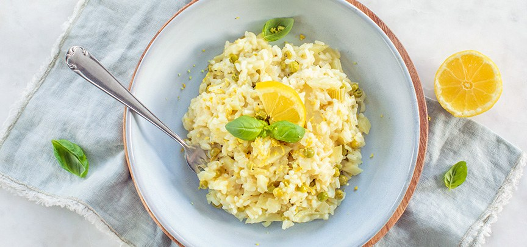

1. Beschrijving
Deze romige risotto met frisse citroen en gegrilde asperges is een heerlijk, zomers gerecht. Het combineert perfect met een romig voorgerecht zoals burrata en een licht dessert zoals strawberry shortcake.

2. Ingrediënten
Risotto
- 300 g risottorijst (Arborio/Carnaroli)
- 1 sjalot, fijn gesnipperd
- 1 teen knoflook, fijn
- 150 ml droge witte wijn
- 1 liter warme bouillon
- 1 biologische citroen (rasp + sap)
- 50 g boter
- 60–80 g Parmezaanse kaas, geraspt
- Zout & zwarte peper
Asperges
- 500 g groene asperges
- Olijfolie
- Zout
Kruidenolie (optioneel)
- Handje basilicum
- Handje peterselie
- 50 ml olijfolie
- Snuf zout
3. Instructies
- Blend basilicum, peterselie, olijfolie en zout tot een gladde olie (optioneel).
- Bereid de asperges door de harde uiteinden te verwijderen en ze te besprenkelen met olijfolie en zout. Grill ze tot licht verkoold.
- Fruit sjalot en knoflook zachtjes in olijfolie.
- Voeg de risottorijst toe en roer 1 minuut tot glanzend.
- Blus af met witte wijn en laat inkoken.
- Voeg geleidelijk warme bouillon toe, roer regelmatig, tot de rijst romig is maar nog een lichte bite heeft (18–20 min).
- Haal van het vuur en roer boter, Parmezaan, citroenrasp en citroensap erdoor.
- Breng op smaak met zout en peper.
- Schep de risotto op borden, leg de gegrilde asperges erop en druppel kruidenolie over de risotto.
- Werk af met extra Parmezaan of citroenrasp naar wens.